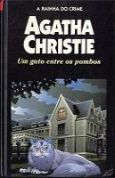

Um Gato Entre os Pombos
Cat Among the Pigeons
O colégio Meadowbank, um símbolo da tradição britânica, está prestes a fechar as portas. O motivo: três assassinatos inexplicáveis no pavilhão de esportes da instituição. A polícia local não consegue explicar os crimes e nem encontra uma pista que possa ajudar a solucionar o enigma. Até que entra em ação o detetive belga Hercule Poirot. Ele põe as suas “pequenas células cinzentas” para funcionar e segue uma trilha de sangue e espionagem que começa em Ramat, no Oriente Médio, e vai até os muros de Meadowbank.
Fátima Pires: O famoso e mundialmente conhecido colégio Meadowbank pode ficar com sua reputação arrasada após uma série de assassinatos que poderiam parecer impossíveis aos olhos das professoras e alunas, mas que foi solucionado graças às fantásticas células cinzentas do pequeno e incrível Hercule Poirot.